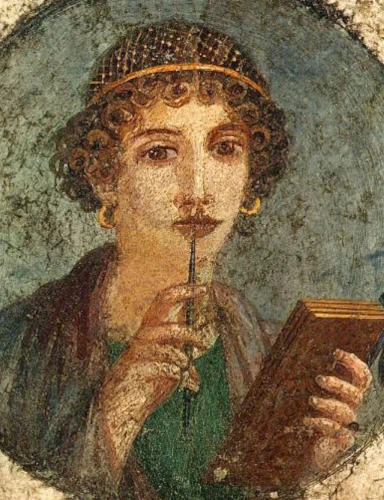

Sapfó
(7. století př. n. l.)

- údajně se narodila v Eresu na ostrově Lesbos
- pocházela z aristokratické rodiny
- vedla dívčí kroužek, který uctíval hudbou a poezií bohyni lásky Afroditu a devět Múz
- byla představitelka tzv. sólové lyriky
- byla označována (Platónem) jako „desátá Múza“
- Sapfó byla jedna z prvních lidí, kteří psali o pocitech v první osobě čísla jednotného
- jelikož Sapfó psala o lásce mezi ženami, její knihy byly zakázány
- v Byzancii roku 380 n. l. spálili všechny její knihy a zbytek nechal zničit papež Řehoř VII.
- Modlitba k Afroditě, Písně z Lesbu
Modlitba k Afroditě
- jediná dochovaná báseň
- původně byla napsána v aiolštině
- je jedním z jejích nejslavnějších básnických děl
V této básni se Sapfo obrací na bohyni lásky a krásy, Afroditu, aby jí pomohla v jejích citových záležitostech, a vyjadřuje svou touhu po lásce a náklonnosti. Báseň zachycuje intenzivní emocionální prožitek a je známá svou lyrickou sílou a jemnou, ženskou perspektivou.